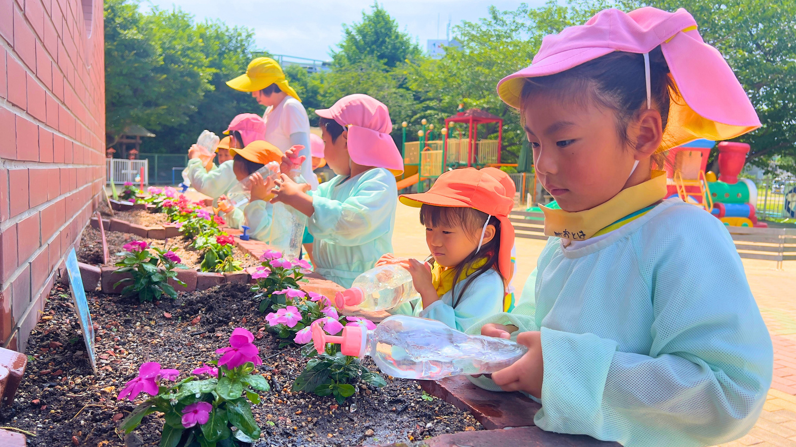
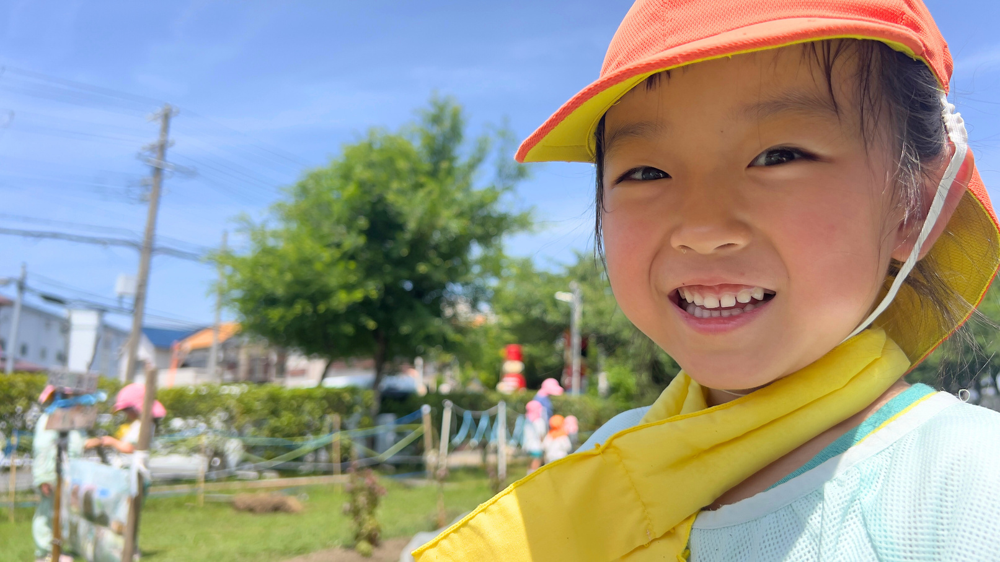

心の根っこを、ここで。
SINCE 1980
みんなが楽しい保育園で
心の根っこを育む
Features
ひさほ保育園の3つの特徴
パンフレットで伝えている園のあたたかさを、Webでも迷わず感じられるように整理しました。
Concept
みんなが楽しい保育園で、心の根っこを育む。
子どもがのびのびと健やかに育つためには、「自分は大切にされている」という安心感が土台になります。 ひさほ保育園では、基本的な生活習慣を身につけながら、豊かな感性、想像力、挑戦する心、コミュニケーションの力を育みます。
施設概要を見る


Childcare
一人ひとりの「好き」と「安心」を大きく育てます。
0歳から就学前まで、月齢や発達に合わせた生活リズムを整えます。食事、睡眠、遊び、学びが無理なくつながる毎日を大切にし、 子どもたち自身が考えて動く力を少しずつ伸ばします。
Food & Health
「食べるって楽しい！」を五感で。

地域とつながる食材
鳥取の「白バラ牛乳」や地元貝塚市の精肉店、青果店、お米など、顔の見える食材を大切にしています。

食べる力を少しずつ
スプーンからお箸へ、年齢に合った食具へ無理なく移行。楽しく身につけられるよう見守ります。

安全へのていねいな配慮
アレルギー対応は医師記入の生活管理指導表をもとに、調理担当と面談して除去食や代替食を提供します。
Events
イベントもたくさんあるよ！
地引網体験、夏祭り、お泊まり保育、芋掘り、生活発表会、もちつきなど、季節と地域を感じる行事を大切にしています。
春
- 入園式・進級式
- こどもの日会
- 親子遠足
夏
- 地引網体験
- 夏祭り
- お泊まり保育
秋
- 運動会
- 遠足
- 芋掘り・生活発表会
冬
- もちつき
- クリスマス会
- 節分会・マラソン大会
Admission & Support
入園案内・子育て支援
通常保育だけでなく、延長保育や一時預かり、園庭開放、育児相談を通して、地域の子育て家庭に寄り添います。
通常保育8:30 - 16:30
延長保育7:00 - 8:30 / 16:30 - 19:00
土曜保育8:30 - 16:30
About
施設概要
- 園名
- 認定こども園 ひさほ保育園
- 設置主体
- 社会福祉法人 泉州福祉会
- 所在地
- 〒597-0031 大阪府貝塚市久保三丁目2番12号
- 連絡先
- TEL 072-427-5688 / FAX 072-427-5687
- 定員
- 75名（2号・3号認定 60名 / 1号認定 15名）
- 入園対象
- 0歳から就学前児童まで
- 最寄り駅
- 東岸和田駅から徒歩15分